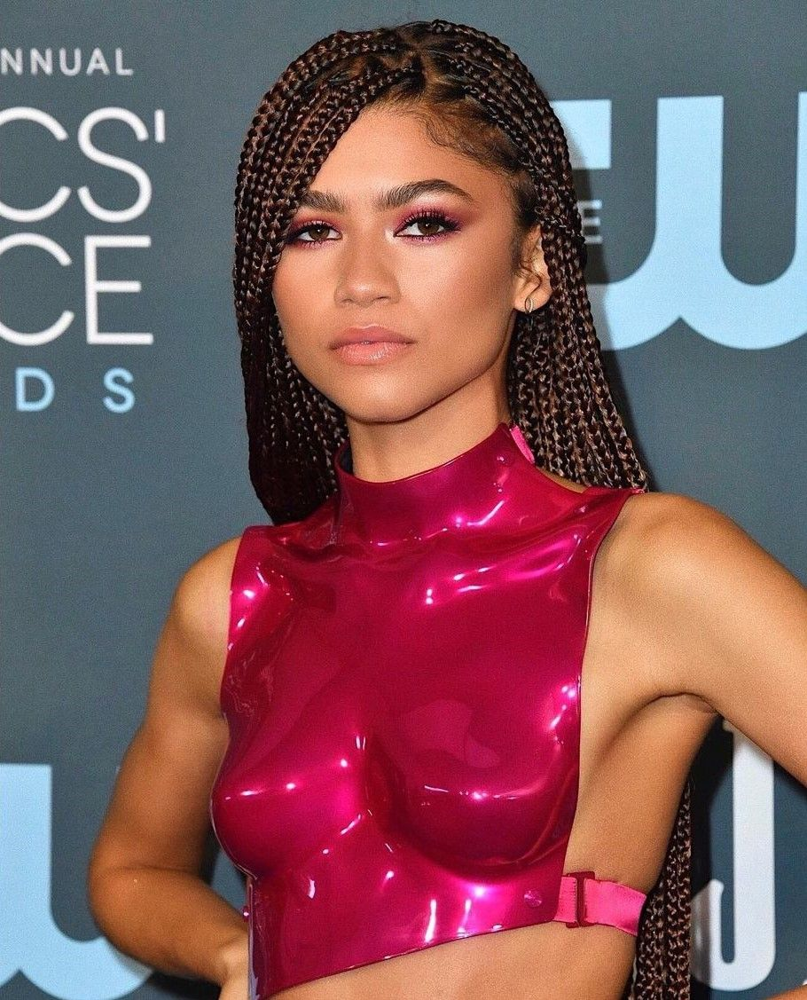
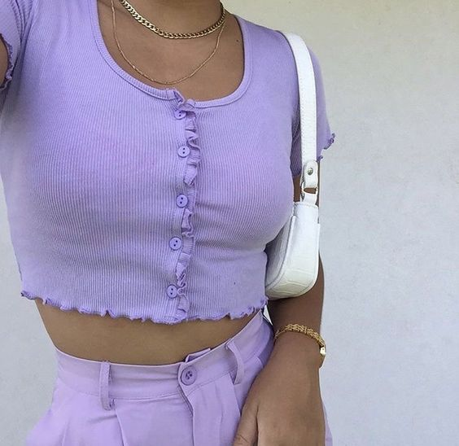
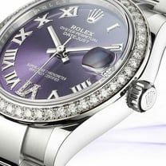
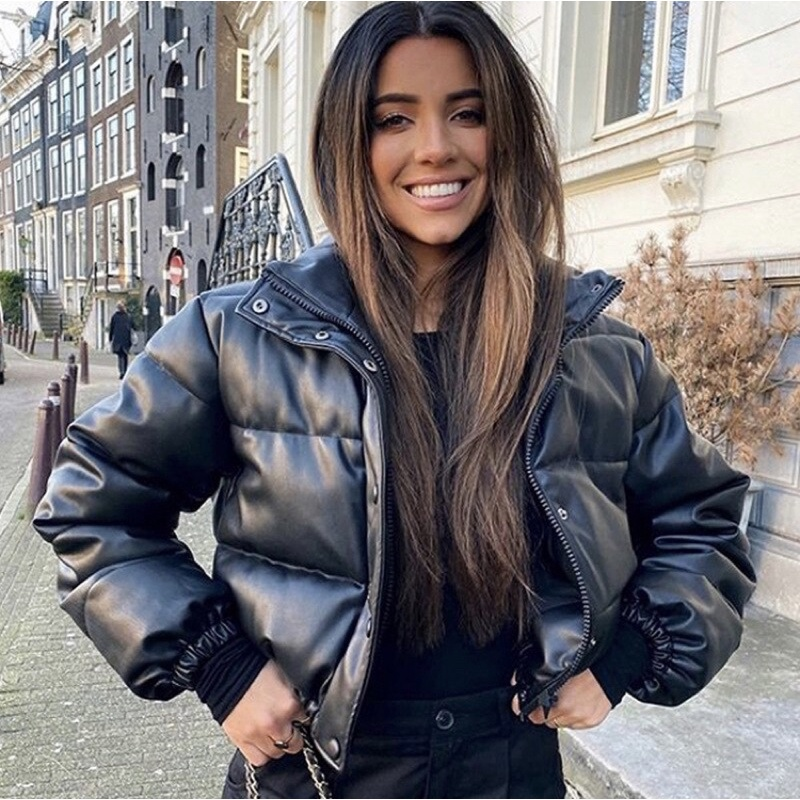
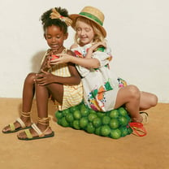

Looks All Black
Em contraste com a moda dopamina, repleta de roupas coloridas e chamativas, os looks All Black
vieram trazer um pouco mais de neutralidade para os visuais de 2023.
Mas não se confunda! Mesmo que eles tenham vindo para bater de frente, as peças coloridas ainda não
vão sair da moda.

Viva magenta, a cor do ano! ótima cor para usar e montar looks inesquecíveis.

Digital lavender, Outra cor que promete nos conquistar esse ano é a lavanda. O tom esteve presente
nas passarelas de primavera/verão 2023 das principais marcas, já conquistou o street style e ainda é
uma das apostas do WGSN.

Os preços dos relógios mais populares de gama alta da Rolex e Patek Philippe continuaram a cair ao
longo do último mês, mesmo com os relógios de gama média de marcas como a Cartier apresentando um
desempenho superior.

As jaquetas criadas para aquecer quem vive ou viaja para montanhas geladas e cobertas de neve sempre
foram populares. Agora, com o foco cada vez mais no conforto, elas ganharam um novo patamar e
viraram o artigo de luxo que mais apareceu nas passarelas das semanas internacionais de moda

A Fábula, marca infantil do Grupo Soma, se inspirou nas pequenas belezas da vida cotidiana para
desenvolver a sua coleção de verão 24. ‘Eu vim de lá’ faz um resgate de origem, identidade e
lembranças de infância, fala sobre paisagens e sobre um Brasil para viajar e se encantar.
Lacoste apresenta "The Emerge", nova coleção de avatares para o metaverso, Esses novos avatares da
coleção "The Emerge" proporcionam aos seus proprietários muitos benefícios, como encontros com seus
atletas embaixadores, acesso privilegiado à vendas privadas e lançamentos de produtos de edição
limitada.
Em sequência ao lançamento de sua plataforma ESG intitulada Be Kind, a Loungerie, grife de lingerie
de luxo, apresenta a linha Be Kind Period, que conta com calcinhas absorventes e absorventes
reutilizáveis, garantindo produtos sustentáveis e de menor impacto ambiental.